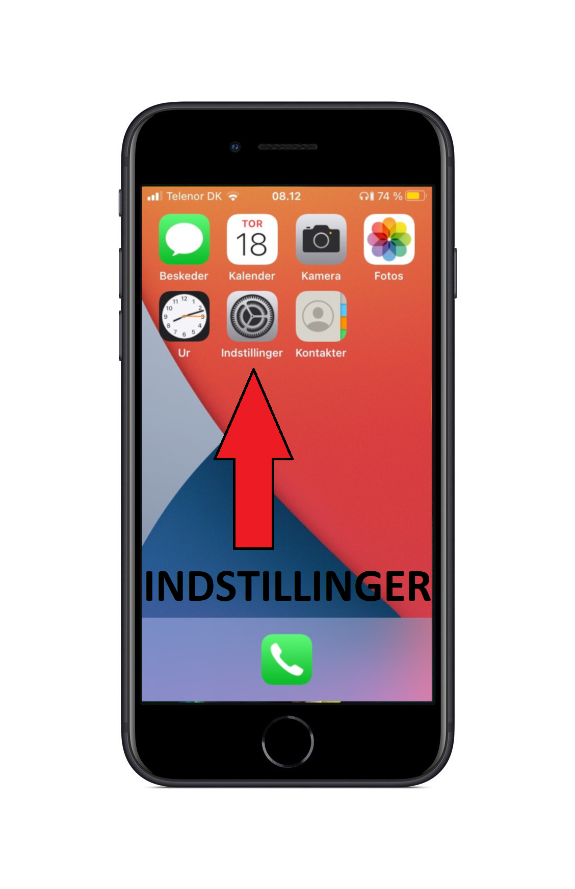
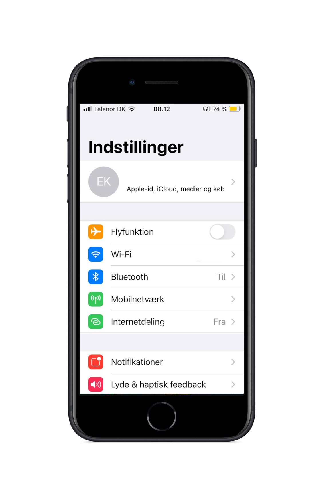
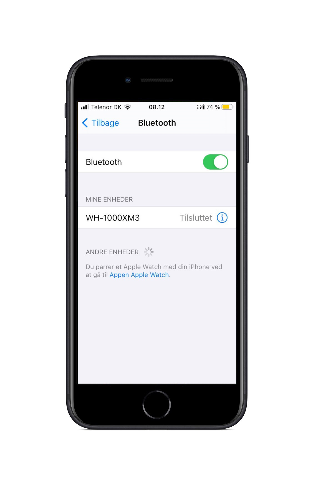

Bluetooth
Indstillinger
iPhone og iPad har begge samme indstillinger for Bluetooth
Vi kommer ind i indstillingerne ved at trykke på denne knap

Find Bluetooth
I indstillingerne kan du scrolle op og ned for at set alle mulighederne
Bluetooth er den tredje mulighed som du kan se på billedet og på din iPad eller iPhone
Tryk på Bluetooth for at komme videre

Tilsluttet / Ikke Tilsluttet?
Dit headset er lavet af Sony og hedder WH-1000MX3
Hvis bluetooth indstillingerne siger "Ikke Tilsluttet" hvor der står WH-1000MX3 skal du trykke på dem
Når der står "Tilsluttet" ligesom på billedet, så er de forbundet til din iPad eller iPhone
Hvis lyden ikke virker kan du klikke her for at se mere

